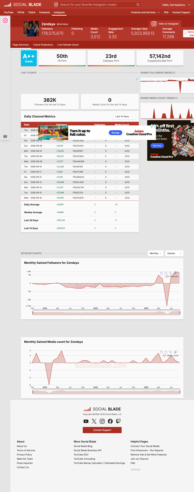

My digital object is a screenshot of Zendaya's socialblade metrics for her Instagram account. This relates to my topic of popularity across social media platforms, as this socialblade accounts acts as a way of tracking those metrics and is relevant to the period in which I'm examining them (2026). When I'm capturing a collection of these metrics for my research, the socialblade metrics by account will be one of my primary ways of doing that, so this photo comes from that digital collection. Scroll down for details. VV

Collection Link: Top 100 Instagram Accounts
on
Socialblade
Object Link: Zendaya's Live Socialblade Account
Here are some of the metrics listed on the site:
The site also features a day-by-day follower count for her Instagram account, as well as her follower count and her media count (what she's posted). It also displays averages for these metrics.